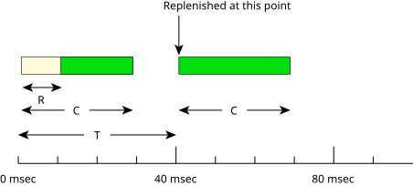
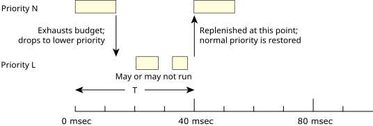

The sporadic scheduling policy is generally used to provide a capped limit on the execution time of a thread within a given period of time.
This behavior is essential when Rate Monotonic Analysis (RMA) is being performed on a system that services both periodic and aperiodic events. Essentially, this algorithm allows a thread to service aperiodic events without jeopardizing the hard deadlines of other threads or processes in the system.
As in FIFO scheduling, a thread using sporadic scheduling continues executing until it blocks or is preempted by a higher-priority thread. A thread using sporadic scheduling will drop in priority, but with this type of scheduling you have much more precise control over the thread's behavior.
Under sporadic scheduling, a thread's priority can oscillate dynamically between a foreground or normal priority and a background or low priority. Using the following parameters, you can control the conditions of this sporadic shift:
As the following diagram shows, the sporadic scheduling policy establishes a thread's initial execution budget (C), which is consumed by the thread as it runs and is replenished periodically (for the amount T). When a thread blocks, the amount of the execution budget that's been consumed (R) is arranged to be replenished at some later time (e.g., at 40 msec) after the thread first became ready to run.

At its normal priority N, a thread will execute for the amount of time defined by its initial execution budget C. As soon as this time is exhausted, the priority of the thread will drop to its low priority L until the replenishment operation occurs.

Here the thread will drop to its low-priority (background) level, where it may or may not get a chance to run depending on the priority of other threads in the system.
Once the replenishment occurs, the thread's priority is raised to its original level. This guarantees that within a properly configured system, the thread will be given the opportunity every period T to run for a maximum execution time C. This ensures that a thread running at priority N will consume at most C/T of the system's CPU resources if there are other ready threads with a priority higher than L.
The QNX OS implementation of the sporadic scheduler differs from the POSIX sporadic scheduler in that, for computational reasons, the algorithm allows at most one pending replenishment per sporadic server thread. At each replenishment, the available budget of the sporadic server thread gets boosted up to its initial budget.